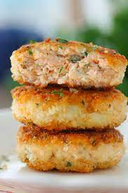

Salmon Cakes

Description
Careful. Watch out for bones. They can choke you. I had a cousin once.
He choked on salmon bones and died. But salmon is so good, it's worth the risk.
Ingredients
- 1 can salmon, drained and flaked
- 2 eggs, beaten
- 1 small onion, diced
- 1 teaspoon ground black pepper
- 3 tablespoons vegetable oil
Steps
- Pick through the salmon, removing any bones.
- In a mixing bowl, beat the eggs and add the diced onion, salmon and pepper. Mix thoroughly.
- Shape into 2 ounce patties. It should yeild 7 or 8.
- In a large skillet over medium heat, heat the oil.
- Fry each patty for 5 minutes on each side or until crispy and golden brown.